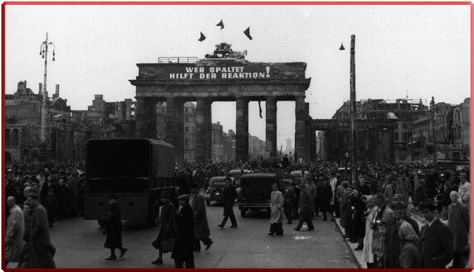

ВЯЧЕСЛАВ МОЛОТОВ
ВЯЧЕСЛАВ МОЛОТОВ ИОСИФ СТАЛИН
ИОСИФ СТАЛИН
ПЕРВЫЙ БЕРЛИНСКИЙ КРИЗИС
Реальным шагом по расколу Германии стала Лондонская конференция по германскому вопросу, в которой приняли участие главы дипломатических ведомств США, Великобритании, Франции, Бельгии, Нидерландов и Люксембурга. Причём на эту конференцию не был приглашён министр иностранных дел СССР Вячеслав Михайлович Молотов, но зато туда позвали двух ведущих германских политиков — главу христианских демократов (ХДС) Конрада Аденауэра и лидера социал-демократов (СДПГ) Курта Шумахера. Естественно, главноначальствующий Советской военной администрации в Германии (СВАГ) и главком Группы советских оккупационных войск в Германии (ГСОВГ) маршал В. Д. Соколовский потребовал от своих коллег по Союзному контрольному совету (СКС) разъяснений на сей счёт и предоставления достоверной информации о ходе Лондонской конференции, но представители западных держав отказались выполнить это законное требование советской стороны. Тогда 20 марта 1948 г. председательствующий в СКС маршал В. Д. Соколовский от имени советского правительства сделал заявление, в котором обвинил США, Великобританию и Францию в сепаратных действиях, в том, что они, по сути, взорвали союзнический контрольный механизм, что теперь Контрольного совета как органа верховной власти в Германии «фактически уже не существует», и на этом основании распустил его заседание, которое стало последним в истории этого совета.В ответ на этот «грубый» демарш советского главкома западные партнёры не только обвинили Москву в «слишком энергичных мерах» по созданию «просоветского режима в восточной зоне оккупации», но также заявили, что она разработала некий «всеобъемлющий план» в отношении Германии, к работе над которым была привлечена «специальная комиссия» во главе с рядом членов высшего советского руководства. Причём в состав этой комиссии якобы были включены шесть высших офицеров бывшего германского Генштаба и два бывших члена проницательной [вероятно: полувоенной] организации «Стальной шлем». Естественно, советская сторона, давно и правомерно подозревающая западные державы в нечистоплотной игре, была вынуждена реагировать на эти провокации и не осталась в долгу. Москва приступила к подготовке своего ответа в самом уязвимом для западных «партнёров» месте, каковым являлись коммуникационные линии, ведущие из западных оккупационных зон в Западный Берлин. Скорый ответ советской стороны сразу воплотился в конкретном плане «контрольно-ограничительных мероприятий на коммуникациях Берлина и советской зоны с западными зонами» через введение транспортной блокады западных секторов Берлина, «кроме ограничений по воздушному сообщению». Реализация этого плана, естественно, была возложена на главу СВАГ и главкома Группы советских оккупационных войск в Германии маршала Советского Союза Василия Даниловича Соколовского и начальника штаба ГСОВГ генерал-полковника Михаила Сергеевича Малинина. Москва надеялась, что подобными шагами «ей удастся сорвать или, по крайней мере, нейтрализовать планы западных держав по объединению и экономическому восстановлению западных зон оккупированной Германии», а также как минимум «ослабить позиции западных держав в самом Берлине». Поэтому уже 25 марта 1948 г. маршал В. Д. Соколовский подписал приказ «Об усилении охраны и контроля на демаркационной линии советской зоны оккупации в Германии», в котором приказал начальнику Транспортного управления СВАГ генерал-майору П. А. Квашнину обеспечить «сокращение до минимума движения пассажирских поездов и транспортов американских, английских и французских войск». А затем, через два дня, в соответствии с новым его приказом «Об усилении охраны и контроля на внешних границах Большого Берлина», были введены существенные ограничения на передвижение людей и транспортные перевозки через берлинские границы. Одновременно американской стороне было предложено срочно эвакуировать все подразделения своих войск связи, расположенных в советской зоне оккупации в городе Веймар. В ответ на эти действия Москвы генерал Л. Клей намеренно направил в Берлин несколько военных эшелонов и приказал никоим образом не допустить каких-либо проверок и инспекций этих эшелонов с советской стороны. Однако они сразу же упёрлись в советские блок-посты, перекрывшие доступ в Берлин, и в этой ситуации, не дожидаясь указаний Вашингтона, генерал Л. Клей организовал «воздушный коридор» и также перекрыл все виды поставок из западных зон в советскую зону оккупации. Неопределённость позиции и наличие многочисленных противоречивых мнений по берлинской проблеме привели к тому, что Вашингтон так и не успел разработать чёткий план собственных действий на случай чрезвычайной обстановки вокруг Берлина. Поэтому временное приостановление всех грузовых и пассажирских перевозок, введённое советскими властями 24 июня 1948 г. и означавшее де-факто начало полномасштабной блокады Западного Берлина, вновь застало США врасплох, хотя ещё за две недели до блокады советская военная администрация под предлогом ремонта закрыла автомобильный мост через Эльбу. Оптимальное решение из создавшейся тупиковой ситуации неожиданно подсказала сама жизнь. В первые дни кризиса генерал Л. Клей в качестве временной меры для доставки продовольствия в западные сектора Берлина прибегнул к использованию транспортной авиации, и это совершенно неожиданно оказалось эффективной мерой. В конечном счёте был выбран именно этот вариант противодействия блокаде, хотя в тот момент никто в Вашингтоне не был уверен, что для преодоления кризиса этого окажется достаточно, мало кто верил, что «воздушный мост» сможет длительное время бесперебойно обеспечивать Западный Берлин всеми необходимыми ресурсами. Но уже в конце июля 1948 г. на заседании Совета национальной безопасности США генерал Л. Клей гарантировал эффективность «воздушного моста», который проработал почти 320 дней. Надо сказать, что в современной историографии существуют разные оценки как масштабов, так и эффективности «воздушного моста». Однако, на наш взгляд, наиболее достоверные оценки содержатся в работах военных специалистов, в частности в мемуарах бывшего главкома ОВД генерала армии А. И. Грибкова, который утверждал, что к его осуществлению были привлечены 57 тысяч военнослужащих союзных войск и 405 американских и 170 английских самолётов, которые совершили более 277 200 самолётовылетов в Берлин и доставили более 2,35 млн тонн грузов. Надо сказать, что преодоление блокады с помощью «воздушного моста» в западной и отчасти нашей историографии часто изображается крайне пафосно и очень однобоко: как «моральная победа Запада», «успешная и героическая акция», спасшая от голодной смерти сотни тысяч западных берлинцев. Однако такие оценки очень далеки от истины, что достаточно убедительно показал профессор В. А. Беспалов, давно опубликовавший известную статью «Блокада Берлина и продовольственный вопрос: забытые аспекты». Достаточно сказать, что только в августе — сентябре 1948 г. по указанию главы СВАГ маршала В. Д. Соколовского начальник берлинского гарнизона генерал-майор А. Г. Котиков организовал поставку в Западный Берлин около 850 тысяч тонн продовольственных грузов, что почти в 1,75 раза превышало то, что западные «партнёры» смогли поставить по «воздушному мосту». Тем временем к концу февраля 1949 г. в результате встречной контрблокады советской зоны Берлина практически прекратились поставки с территории Тризонии многих видов жизненно важной промышленной и продовольственной продукции и сырья, что отрицательно сказалось на экономическом состоянии всей Восточной Германии. О сложившемся положении маршал В. Д. Соколовский был вынужден проинформировать Москву, что вынудило И. В. Сталина и В. М. Молотова проявить большую уступчивость и предложить оригинальный способ разрешения этого конфликта путём обмена Западного Берлина на Тюрингию или Саксонию, входивших в советскую зону оккупации. С позиций чистой геополитики подобный обмен, конечно, давал Вашингтону определённые стратегические выгоды, однако американское руководство посчитало, что полный уход из Берлина подорвёт репутацию США не только в самой Германии, но и во всём западном мире. Как свидетельствуют очевидцы, уже в сентябре 1948 г. И. В. Сталин, оценив бесперспективность блокады Берлина, утратил интерес к переговорам по берлинскому вопросу и под давлением неблагоприятных обстоятельств пересмотрел свою прежнюю позицию по этому вопросу. После долгих месяцев дипломатического тупика в конце января 1949 г. в одном из интервью он намекнул на готовность Москвы рассмотреть возможность снятия блокады, если одновременно будет снята и контрблокада. А уже в начале мая 1949 г. в ходе секретных переговоров постоянных представителей СССР и США в ООН обе стороны согласились отказаться от любых видов блокадных действий, и Первый Берлинский кризис подошёл к концу.